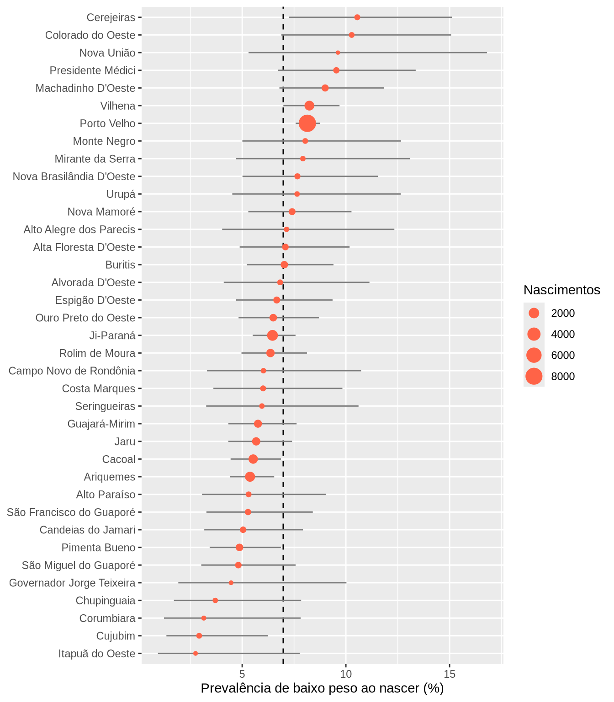
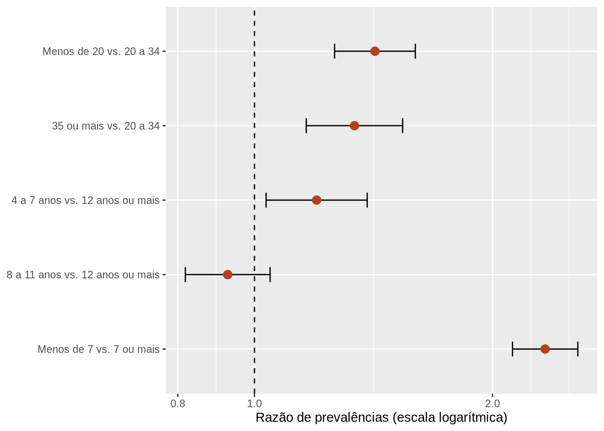

library(tidyverse)
library(here)
library(gtsummary)
library(epiR)
theme_gtsummary_language(language = "pt", decimal.mark = ",", big.mark = ".")17 Estudo integrador: da pergunta ao relatório
Pré-requisitos: todos os capítulos anteriores · Pacotes: os utilizados ao longo do livro
Objetivos de aprendizagem
Ao final deste capítulo, espera-se que o estudante seja capaz de conduzir, de forma integrada e reprodutível, todas as etapas de uma análise de dados secundários em saúde: formular uma pergunta e definir os indicadores correspondentes, obter e preparar os dados, explorá-los e avaliar sua qualidade, realizar as análises descritivas e inferenciais adequadas, comunicar os resultados em um relatório Quarto e reconhecer as limitações decorrentes da natureza dos dados.
Ao longo do livro, cada capítulo tratou de uma etapa da análise de dados. Na prática, essas etapas se encadeiam em um único trabalho, que começa com uma pergunta e termina com um relatório. Este capítulo percorre esse caminho do início ao fim, com um exemplo completo feito com os nascidos vivos de Rondônia em 2019. Ele serve de modelo para o trabalho final da disciplina, cujo roteiro está na última seção.
17.1 Formulando a pergunta e definindo os indicadores
Uma boa análise começa por uma pergunta clara, que diga o que se quer saber, sobre quem, onde e quando. Perguntas vagas, como “analisar os nascimentos em Rondônia”, levam a análises sem foco. Vamos trabalhar com a seguinte pergunta: qual foi a prevalência de baixo peso ao nascer entre os nascidos vivos de mães residentes em Rondônia em 2019, como ela variou entre os municípios e quais características maternas e da assistência pré-natal estiveram associadas a ela?
O passo seguinte é traduzir a pergunta em definições operacionais, isto é, dizer exatamente como cada conceito será medido com as variáveis disponíveis. A Tabela 17.1 faz isso para o exemplo.
| Conceito | Definição operacional | Variável do SINASC |
|---|---|---|
| Baixo peso ao nascer (desfecho) | Peso inferior a 2.500 g | PESO |
| Prevalência de baixo peso | Nascidos vivos com baixo peso ÷ total de nascidos vivos com peso informado × 100 | PESO |
| Idade da mãe | Menos de 20, 20 a 34, 35 anos ou mais | IDADEMAE |
| Escolaridade da mãe | Anos de estudo, em cinco categorias | ESCMAE |
| Pré-natal | Menos de sete ou sete ou mais consultas | CONSULTAS |
| Tipo de gravidez | Única ou múltipla | GRAVIDEZ |
| Município | Município de residência da mãe | CODMUNRES |
Também é preciso reconhecer o delineamento. Os dados do SINASC registram, no mesmo momento, o nascimento e as características da mãe e da gestação. Para a pergunta que fizemos, eles funcionam como um estudo transversal de base populacional, e a medida de associação adequada é a razão de prevalências, como vimos no Capítulo 15. Como os dados cobrem todos os nascimentos registrados, e não uma amostra, os intervalos de confiança devem ser lidos como uma medida da variabilidade aleatória do processo que gera os nascimentos, e não do erro de amostragem.
17.2 Obtenção e preparação dos dados
Em um trabalho real, o primeiro passo seria obter os dados. Com o pacote microdatasus (SALDANHA; BASTOS; BARCELLOS, 2019), o download e o pré-processamento dos nascidos vivos de Rondônia em 2019 seriam feitos com poucas linhas, como vimos no Capítulo 5. O código abaixo não é executado no livro, que usa o arquivo já incluído na pasta dados/.
library(microdatasus)
sinasc_bruto <- fetch_datasus(year_start = 2019, year_end = 2019,
uf = "RO", information_system = "SINASC")
sinasc <- process_sinasc(sinasc_bruto)
write_csv2(sinasc, here("dados", "brutos", "sinasc_ro_2019.csv"))A preparação reúne, em um único script, todas as etapas das Partes II e III: importação, seleção de variáveis, tratamento de códigos de ignorado, criação de novas variáveis e ordenação das categorias. No livro, esse script é o scripts/preparar-sinasc.R, que vem sendo usado desde o Capítulo 7 e que, no Capítulo 12, passou a incluir as decisões da análise exploratória. Vamos executá-lo e acrescentar as variáveis específicas da pergunta.
source(here("scripts", "preparar-sinasc.R"))
estudo <- nascidos_analise |>
mutate(
baixo_peso_cat = factor(if_else(baixo_peso, "Sim", "Não"), levels = c("Sim", "Não")),
pre_natal = factor(if_else(consultas_cat == "7 ou mais", "7 ou mais", "Menos de 7"),
levels = c("Menos de 7", "7 ou mais")),
gravidez_cat = case_when(
gravidez == "Única" ~ "Única",
gravidez %in% c("Dupla", "Tríplice e mais") ~ "Múltipla"
),
gravidez_cat = factor(gravidez_cat, levels = c("Múltipla", "Única"))
)
glimpse(estudo)
#> Rows: 27,028
#> Columns: 25
#> $ codmunres <chr> "110001", "110001", "110001", "110037", "110001", "11…
#> $ munresnome <chr> "Alta Floresta D'Oeste", "Alta Floresta D'Oeste", "Al…
#> $ dtnasc <date> 2019-02-19, 2019-02-21, 2019-02-25, 2019-03-20, 2019…
#> $ sexo <fct> Masculino, Feminino, Feminino, Feminino, Feminino, Ma…
#> $ peso <dbl> 3685, 3055, 3460, 2982, 3310, 2740, 3158, 3192, 3570,…
#> $ idademae <dbl> 19, 29, 37, 30, 30, 33, 37, 27, 20, 30, 31, 21, 21, 1…
#> $ escmae <fct> 8 a 11 anos, 8 a 11 anos, 8 a 11 anos, 12 anos ou mai…
#> $ racacor <fct> Branca, Branca, Branca, Parda, Parda, Branca, Branca,…
#> $ gestacao <chr> "37 a 41 semanas", "37 a 41 semanas", "37 a 41 semana…
#> $ semagestac <dbl> 39, 38, 40, 38, 38, 38, 38, 39, 39, 39, 40, 38, 41, 3…
#> $ gravidez <chr> "Única", "Única", "Única", "Única", "Única", "Única",…
#> $ parto <fct> Cesáreo, Cesáreo, Cesáreo, Cesáreo, Cesáreo, Cesáreo,…
#> $ consultas <dbl> 4, 4, 4, 3, 4, 4, 4, 4, 3, 4, 4, 3, 4, 3, 4, 3, 4, 3,…
#> $ apgar5 <dbl> 10, 9, 10, 10, 10, 10, 10, 10, 9, 10, 9, 10, 9, 9, 7,…
#> $ baixo_peso <lgl> FALSE, FALSE, FALSE, FALSE, FALSE, FALSE, FALSE, FALS…
#> $ prematuro <lgl> FALSE, FALSE, FALSE, FALSE, FALSE, FALSE, FALSE, FALS…
#> $ mae_adolescente <lgl> TRUE, FALSE, FALSE, FALSE, FALSE, FALSE, FALSE, FALSE…
#> $ pre_natal_7mais <lgl> TRUE, TRUE, TRUE, FALSE, TRUE, TRUE, TRUE, TRUE, FALS…
#> $ faixa_idade_mae <fct> Menos de 20, 20 a 34, 35 ou mais, 20 a 34, 20 a 34, 2…
#> $ consultas_cat <fct> 7 ou mais, 7 ou mais, 7 ou mais, 4 a 6, 7 ou mais, 7 …
#> $ mes_nasc <fct> fev, fev, fev, mar, mar, mar, abr, abr, fev, mar, mar…
#> $ ig_inconsistente <lgl> FALSE, FALSE, FALSE, FALSE, FALSE, FALSE, FALSE, FALS…
#> $ baixo_peso_cat <fct> Não, Não, Não, Não, Não, Não, Não, Não, Não, Não, Não…
#> $ pre_natal <fct> 7 ou mais, 7 ou mais, 7 ou mais, Menos de 7, 7 ou mai…
#> $ gravidez_cat <fct> Única, Única, Única, Única, Única, Única, Única, Únic…Organizar o trabalho em um projeto do RStudio, com pastas separadas para dados brutos, dados processados, scripts e resultados, como vimos no Capítulo 1, e manter a preparação em um script à parte do relatório são práticas que facilitam a revisão e a reutilização do código.
17.3 Exploração e qualidade dos dados
Antes das análises, aplicamos o protocolo do Capítulo 12 às variáveis da pergunta. O primeiro passo é a completude. Com across() e everything(), calculamos a proporção de valores ausentes de todas as variáveis de uma vez.
estudo |>
select(peso, idademae, escmae, consultas, gravidez_cat, codmunres) |>
summarise(across(everything(), \(x) round(mean(is.na(x)) * 100, 1))) |>
pivot_longer(everything(), names_to = "variavel", values_to = "perc_ausente")
#> # A tibble: 6 × 2
#> variavel perc_ausente
#> <chr> <dbl>
#> 1 peso 0
#> 2 idademae 0
#> 3 escmae 1.2
#> 4 consultas 0.2
#> 5 gravidez_cat 0.3
#> 6 codmunres 0O peso e o município estão completos, e as demais variáveis têm poucos valores ausentes, o que permite analisá-las com os registros disponíveis. Os valores extremos e a consistência do peso com a idade gestacional já foram avaliados no Capítulo 12. Um ponto adicional, importante para esta pergunta, é o tipo de gravidez.
estudo |>
filter(!is.na(gravidez_cat)) |>
group_by(gravidez_cat) |>
summarise(nascimentos = n(), perc_baixo_peso = mean(baixo_peso) * 100)
#> # A tibble: 2 × 3
#> gravidez_cat nascimentos perc_baixo_peso
#> <fct> <int> <dbl>
#> 1 Múltipla 497 59.0
#> 2 Única 26452 6.00A prevalência de baixo peso entre os gemelares é muitas vezes maior que entre os nascidos de gestação única. Como os gemelares formam um grupo com características muito próprias e são poucos, uma decisão comum é restringir a análise de fatores associados às gestações únicas, relatando separadamente a prevalência geral. É o que faremos, registrando a decisão.
estudo_unicos <- estudo |>
filter(gravidez_cat == "Única")| Verificação | Achado | Decisão |
|---|---|---|
| Completude | Peso e município completos; demais variáveis com poucos ausentes | Analisar com os registros disponíveis e relatar a completude |
| Peso e idade gestacional | Poucos registros com idade gestacional incompatível com o peso (Capítulo 12) | Idade gestacional considerada ausente nesses registros |
| Tipo de gravidez | Prevalência de baixo peso muito maior entre gemelares | Restringir a análise de fatores associados às gestações únicas |
| Municípios pequenos | Proporções instáveis em municípios com poucos nascimentos | Apresentar os municípios com intervalos de confiança |
17.4 Análise descritiva e inferencial
Prevalência geral e por município
A prevalência geral de baixo peso, com todos os nascimentos, foi de 7,0%. Para olhar os municípios, vamos reaproveitar a função proporcao_ic(), escrita no Capítulo 16, com uma modificação. Com poucos casos, o intervalo pela aproximação normal pode ter limite inferior negativo, o que não faz sentido para uma proporção. O intervalo de Wilson se comporta melhor nessas situações e fica sempre entre 0 e 1. Basta mudar o corpo da função, sem alterar a forma de usá-la, o que mostra uma das vantagens de organizar o código em funções.
proporcao_ic <- function(eventos, total, confianca = 0.95) {
p <- eventos / total
z <- qnorm(1 - (1 - confianca) / 2)
# intervalo de Wilson
centro <- (p + z^2 / (2 * total)) / (1 + z^2 / total)
margem <- z * sqrt(p * (1 - p) / total + z^2 / (4 * total^2)) / (1 + z^2 / total)
tibble(proporcao = p, inferior = centro - margem, superior = centro + margem)
}
por_municipio <- estudo |>
group_by(munresnome) |>
summarise(nascimentos = n(), casos = sum(baixo_peso)) |>
filter(nascimentos >= 100) |>
mutate(proporcao_ic(casos, nascimentos)) |>
mutate(across(c(proporcao, inferior, superior), \(x) x * 100))
por_municipio |> arrange(desc(proporcao)) |> head()
#> # A tibble: 6 × 6
#> munresnome nascimentos casos proporcao inferior superior
#> <chr> <int> <int> <dbl> <dbl> <dbl>
#> 1 Cerejeiras 237 25 10.5 7.25 15.1
#> 2 Colorado do Oeste 214 22 10.3 6.89 15.1
#> 3 Nova União 104 10 9.62 5.31 16.8
#> 4 Presidente Médici 304 29 9.54 6.72 13.4
#> 5 Machadinho D'Oeste 500 45 9 6.79 11.8
#> 6 Vilhena 1590 131 8.24 6.99 9.69Usar proporcao_ic() dentro de mutate() acrescenta à tabela as três colunas que a função devolve. Mantivemos os 37 municípios com pelo menos 100 nascimentos, já que, nos menores, as proporções são muito instáveis e os intervalos ficam largos demais para qualquer comparação.
ggplot(por_municipio, aes(x = proporcao, y = fct_reorder(munresnome, proporcao))) +
geom_vline(xintercept = mean(estudo$baixo_peso) * 100, linetype = "dashed") +
geom_errorbarh(aes(xmin = inferior, xmax = superior), height = 0, color = "grey50") +
geom_point(aes(size = nascimentos), color = "#ff6347") +
labs(x = "Prevalência de baixo peso ao nascer (%)", y = NULL, size = "Nascimentos")
O gráfico mostra que a maior parte das diferenças entre os municípios é compatível com a variação aleatória, já que a maioria dos intervalos cruza a linha da prevalência estadual. Rankings de municípios feitos apenas com as proporções, sem considerar os intervalos, podem levar a conclusões equivocadas sobre quais municípios estão em pior situação.
Características das mães segundo o desfecho
A tabela descritiva compara as características das mães dos recém-nascidos com e sem baixo peso, entre as gestações únicas.
estudo_unicos |>
select(baixo_peso_cat, faixa_idade_mae, escmae, pre_natal, parto) |>
tbl_summary(
by = baixo_peso_cat,
label = list(faixa_idade_mae ~ "Idade da mãe", escmae ~ "Escolaridade da mãe",
pre_natal ~ "Consultas de pré-natal", parto ~ "Tipo de parto"),
percent = "row",
missing_text = "Sem informação"
) |>
modify_spanning_header(all_stat_cols() ~ "**Baixo peso ao nascer**") |>
add_p(test = all_categorical() ~ "chisq.test")| Características |
Baixo peso ao nascer
|
Valor-p2 | |
|---|---|---|---|
| Sim N = 1.5871 |
Não N = 24.8651 |
||
| Idade da mãe | <0,001 | ||
| Menos de 20 | 346 (7,7%) | 4.164 (92%) | |
| 20 a 34 | 1.020 (5,4%) | 17.864 (95%) | |
| 35 ou mais | 221 (7,2%) | 2.837 (93%) | |
| Escolaridade da mãe | <0,001 | ||
| Nenhuma | 4 (10%) | 36 (90%) | |
| 1 a 3 anos | 54 (11%) | 451 (89%) | |
| 4 a 7 anos | 331 (7,1%) | 4.339 (93%) | |
| 8 a 11 anos | 838 (5,5%) | 14.480 (95%) | |
| 12 anos ou mais | 332 (5,9%) | 5.282 (94%) | |
| Sem informação | 28 | 277 | |
| Consultas de pré-natal | <0,001 | ||
| Menos de 7 | 807 (9,9%) | 7.359 (90%) | |
| 7 ou mais | 773 (4,2%) | 17.463 (96%) | |
| Sem informação | 7 | 43 | |
| Tipo de parto | <0,001 | ||
| Vaginal | 607 (6,9%) | 8.248 (93%) | |
| Cesáreo | 977 (5,6%) | 16.593 (94%) | |
| Sem informação | 3 | 24 | |
| 1 n (%) | |||
| 2 Teste qui-quadrado de independência | |||
Com percent = "row", os percentuais são calculados dentro de cada categoria da característica materna, de modo que a coluna “Sim” mostra diretamente a prevalência de baixo peso em cada categoria. A função add_p() escolhe o teste conforme o tipo e o tamanho das caselas; aqui, pedimos o teste qui-quadrado para todas as variáveis categóricas com o argumento test. Repare que o grupo de mães sem escolaridade é muito pequeno, o que torna instável a prevalência calculada para ele.
Medidas de associação
Por fim, estimamos as razões de prevalências para as principais exposições, comparando cada categoria com a de referência. Para isso, adaptamos a função do estudo de caso do Capítulo 15.
razao_prevalencias <- function(dados, exposicao, nivel_exposto, nivel_referencia) {
dados_tab <- dados |>
filter(.data[[exposicao]] %in% c(nivel_exposto, nivel_referencia)) |>
mutate(exposto = factor(.data[[exposicao]], levels = c(nivel_exposto, nivel_referencia)))
resultado <- epi.2by2(table(dados_tab$exposto, dados_tab$baixo_peso_cat),
method = "cross.sectional")
resultado$massoc.summary |>
slice(1) |>
transmute(comparacao = paste(nivel_exposto, "vs.", nivel_referencia),
rp = est, inferior = lower, superior = upper)
}
associacoes <- bind_rows(
razao_prevalencias(estudo_unicos, "faixa_idade_mae", "Menos de 20", "20 a 34"),
razao_prevalencias(estudo_unicos, "faixa_idade_mae", "35 ou mais", "20 a 34"),
razao_prevalencias(estudo_unicos, "escmae", "4 a 7 anos", "12 anos ou mais"),
razao_prevalencias(estudo_unicos, "escmae", "8 a 11 anos", "12 anos ou mais"),
razao_prevalencias(estudo_unicos, "pre_natal", "Menos de 7", "7 ou mais")
)
associacoes |> mutate(across(c(rp, inferior, superior), \(x) round(x, 2)))
#> comparacao rp inferior superior
#> 1 Menos de 20 vs. 20 a 34 1.42 1.26 1.60
#> 2 35 ou mais vs. 20 a 34 1.34 1.16 1.54
#> 3 4 a 7 anos vs. 12 anos ou mais 1.20 1.03 1.39
#> 4 8 a 11 anos vs. 12 anos ou mais 0.93 0.82 1.05
#> 5 Menos de 7 vs. 7 ou mais 2.33 2.12 2.56ggplot(associacoes, aes(x = rp, y = fct_rev(fct_inorder(comparacao)))) +
geom_vline(xintercept = 1, linetype = "dashed") +
geom_errorbarh(aes(xmin = inferior, xmax = superior), height = 0.2) +
geom_point(size = 3, color = "#b5401f") +
scale_x_log10() +
labs(x = "Razão de prevalências (escala logarítmica)", y = NULL)
Entre as gestações únicas, a prevalência de baixo peso foi 1,42 vez maior entre os filhos de mães adolescentes e 1,34 vez maior entre os filhos de mães com 35 anos ou mais, em comparação com as mães de 20 a 34 anos. As mães com 4 a 7 anos de estudo tiveram prevalência um pouco maior que as com 12 anos ou mais, enquanto as com 8 a 11 anos não diferiram delas. A associação mais forte foi com o pré-natal: a prevalência de baixo peso foi 2,33 vezes maior entre os filhos de mães com menos de sete consultas. Como discutido no Capítulo 15, parte dessa associação pode refletir a menor duração das gestações que terminam em parto prematuro, e todas essas medidas são brutas.
As razões de prevalências são apresentadas em escala logarítmica porque, nessa escala, uma razão de 2 e uma de 0,5 ficam à mesma distância de 1, o que respeita a natureza multiplicativa da medida.
17.5 Comunicação dos resultados
Os resultados de uma análise só cumprem seu papel quando são comunicados de forma clara. O relatório deve ser escrito em um documento Quarto, como vimos no Capítulo 4, para que tabelas, gráficos e números do texto venham diretamente do código e sejam atualizados automaticamente se os dados mudarem. Uma estrutura habitual, inspirada nos artigos científicos, é a seguinte.
---
title: "Baixo peso ao nascer em Rondônia, 2019"
author: "Nome do estudante"
date: today
lang: pt-BR
format:
html:
embed-resources: true
execute:
echo: false
warning: false
message: false
---
```{r}
#| label: preparo
library(tidyverse)
library(here)
source(here("scripts", "preparar-sinasc.R"))
```
## Introdução
Por que a pergunta é relevante e qual é o objetivo.
## Métodos
Fonte dos dados, período, população, definições das variáveis
e dos indicadores, decisões da exploração e métodos estatísticos.
## Resultados
Tabelas e gráficos produzidos pelo código, com os números
do texto escritos com código inline.
## Discussão
O que os resultados significam, comparação com outros estudos
e limitações.
## Informações da sessão
```{r}
sessionInfo()
```Na redação dos resultados, os números devem vir do código, com a sintaxe inline vista no Capítulo 4. Por exemplo, a frase “a prevalência de baixo peso foi de r round(mean(estudo$baixo_peso) * 100, 1)%” é atualizada sozinha se os dados mudarem. A seção de limitações é parte essencial de qualquer análise de dados secundários. No exemplo, ela mencionaria, entre outros pontos, a possibilidade de erros de registro, os valores ausentes, o caráter transversal dos dados, que não permite estabelecer a ordem temporal entre todas as exposições e o desfecho, e o fato de as associações estimadas serem brutas, sem ajuste para outras variáveis.
A função sessionInfo(), no final do relatório, registra a versão do R e dos pacotes usados, o que ajuda a reproduzir a análise no futuro. Em projetos de longa duração, o pacote renv vai além e guarda as versões exatas de todos os pacotes do projeto, permitindo recriar o mesmo ambiente em outro computador ou anos depois.
17.6 Roteiro para o trabalho final
O trabalho final da disciplina segue o percurso deste capítulo, aplicado a uma pergunta escolhida pelo estudante ou pelo grupo, com dados de um sistema de informação em saúde ou de uma das bases do pacote medicaldata. Os critérios de avaliação, os prazos e a forma de entrega são apresentados pelos docentes no início da disciplina. O roteiro a seguir ajuda a organizar o trabalho.
O primeiro passo é escolher o tema e formular a pergunta, dizendo o que se quer saber, sobre quem, onde e quando. Em seguida, é preciso identificar a fonte dos dados, verificar se ela contém as variáveis necessárias e escrever as definições operacionais. Com os dados em mãos, o trabalho segue para a importação e a preparação, em um script organizado dentro de um projeto do RStudio, e para a exploração, com o registro das decisões. Só então vêm as análises descritivas e, quando fizer sentido, as inferenciais, escolhidas de acordo com o tipo das variáveis e o delineamento. O trabalho termina com o relatório em Quarto, que deve ser renderizado do início ao fim sem erros. A lista de verificação da Tabela 17.4 pode ser usada antes da entrega.
| Etapa | Pergunta de verificação |
|---|---|
| Pergunta | A pergunta diz o que se quer saber, sobre quem, onde e quando? |
| Dados | A fonte, o período e a forma de obtenção estão descritos? Se os dados forem fictícios ou simulados, isso está dito? |
| Definições | Cada variável e indicador tem uma definição operacional clara? |
| Projeto | O trabalho está em um projeto do RStudio, com caminhos relativos e here()? |
| Preparação | Todas as transformações estão no código, sem edições manuais nos dados? |
| Exploração | A completude e os valores extremos foram verificados e as decisões, registradas? |
| Análise | Os métodos são adequados ao tipo das variáveis e ao delineamento? |
| Resultados | As estimativas vêm acompanhadas de intervalos de confiança, e não apenas de valores-p? |
| Gráficos e tabelas | Têm títulos, rótulos em português, unidades e fonte dos dados? |
| Interpretação | A discussão distingue associação de causalidade e apresenta as limitações? |
| Reprodutibilidade | O documento Quarto é renderizado do início ao fim sem erros em outro computador? |
17.7 Síntese
Uma análise de dados em saúde percorre um caminho que vai da pergunta ao relatório. A pergunta precisa ser específica e traduzida em definições operacionais, e o delineamento dos dados orienta a escolha das medidas e dos métodos. A preparação deve ficar registrada em código, dentro de um projeto organizado, e a exploração deve avaliar a qualidade dos dados e documentar as decisões. As análises descritivas e inferenciais respondem à pergunta, sempre com estimativas e intervalos de confiança. O relatório em Quarto reúne texto, código e resultados em um único documento reprodutível, que inclui as limitações da análise e o registro das versões do software.
17.8 Para saber mais
A introdução do R para Ciência de Dados (WICKHAM; ÇETINKAYA-RUNDEL; GROLEMUND, 2023) apresenta o ciclo de trabalho da ciência de dados, da importação à comunicação, e o capítulo sobre Quarto aprofunda a produção de relatórios. O Manual de R para Epidemiologistas (BATRA et al., 2021) traz capítulos sobre relatórios com R Markdown, cujos princípios valem para o Quarto, e sobre a organização de projetos e a produção de relatórios de rotina. Para o planejamento e a análise de estudos com amostras, o livro online Amostragem com R é uma leitura útil, e o portal Teaching of Statistics in the Health Sciences reúne conjuntos de dados de estudos em saúde que podem inspirar temas para o trabalho final, vários deles disponíveis no pacote medicaldata.
| Obra | Capítulo | Seções de interesse |
|---|---|---|
| R para Ciência de Dados (WICKHAM; ÇETINKAYA-RUNDEL; GROLEMUND, 2023) | Introdução; 28. Quarto | Fluxo de trabalho; Formatos e recursos do Quarto |
| Manual de R para Epidemiologistas (BATRA et al., 2021) | 40. Relatórios com R Markdown | Estrutura do arquivo; Relatórios parametrizados |
| Introdução à Linguagem R (FARIA, 2024) | — | Capítulos de importação, transformação e visualização, como revisão |